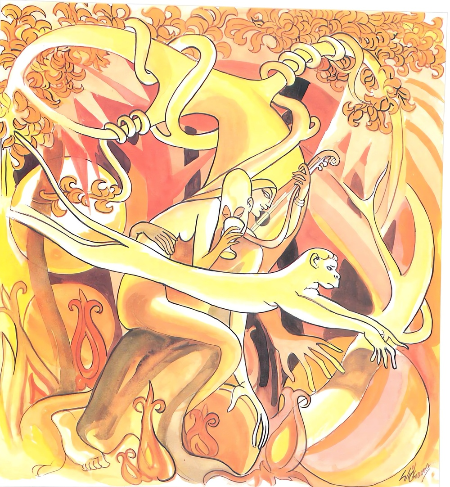
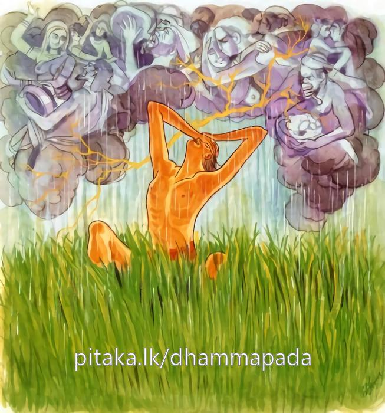
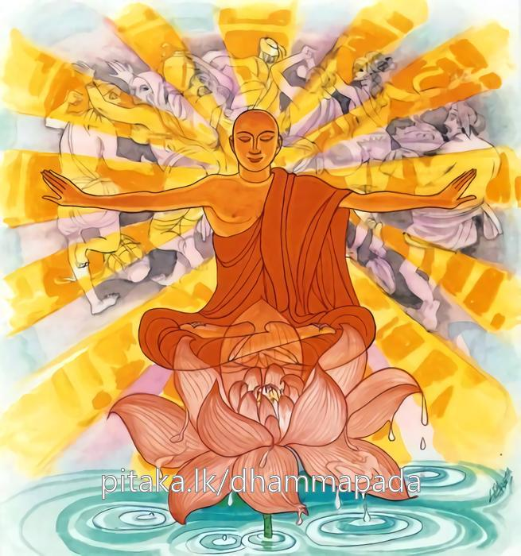
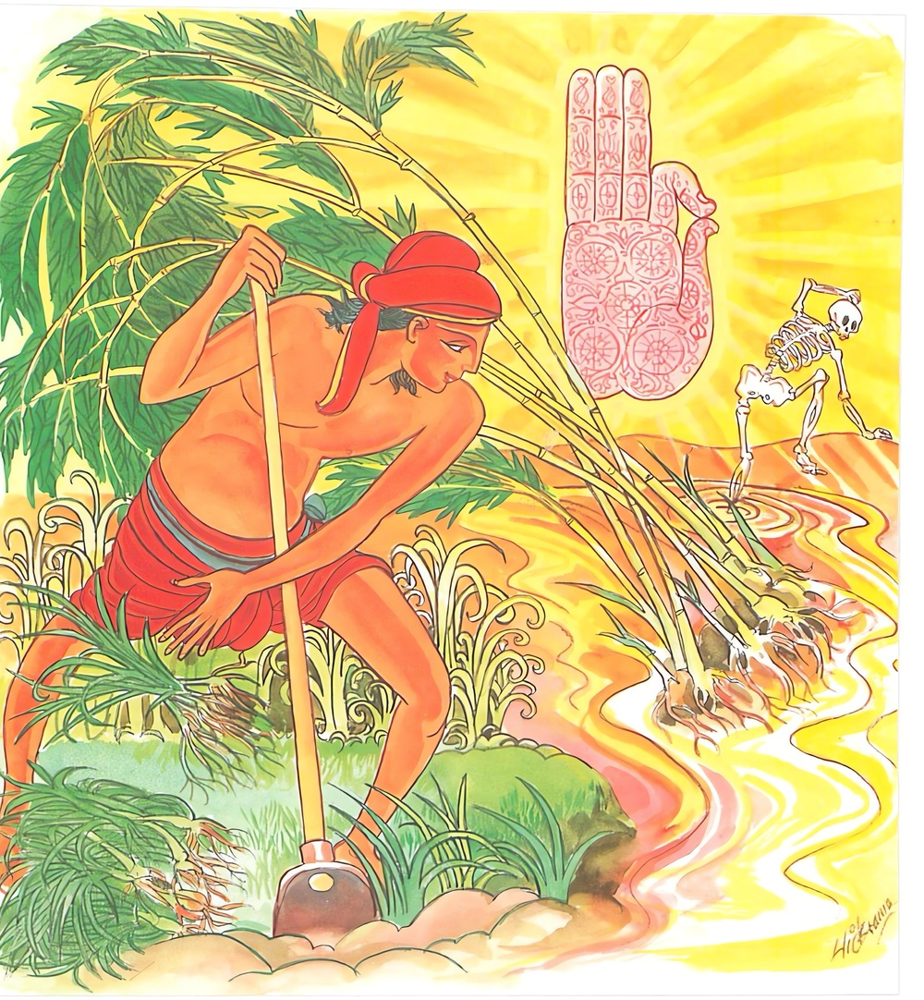

24-1 කපිල මත්ස්යයාගේ කථා පුවත
මෙම කතාව සද්ධර්ම සාගරයෙන් ද කියවන්න.
මනුජස්ස පමත්තචාරිනො තණ්හා වඩ්ඪති මාලුවා විය
සො ප්ලවති හුරාහුරං ඵලමිච්ඡං’ව වනස්මිං වානරො.
පමා වැ වසන පුරුෂයාට තෘෂ්ණාව (රුකට) මාලුවා වැලක් මෙන් ඔහුගේ විනාශය පිණිස වැඩෙයි. ඒ තෘෂ්ණාවශග පුද්ගල තෙම වනයෙහි පල කැමැති (වැ රුකින් රුකට පනන) වඳුරකු මෙන් භවයෙන් භවයට දිවැ යන්නේ ය.

යං එසා සහතී ජම්මී තණ්හා ලොකෙ විසත්තිකා
සොකා තස්ස පවඩ්ඪන්ති අභිවට්ඨං’ව බීරණං.
අරමුණෙහි ඇලෙන ලාමක වූ මේ තෘෂ්ණාව යමකු මැඩැ පවතී ද, ඒ පුඟුලාහට මහවැස්සෙන් තෙමුනු හොට තණ (වැඩෙන්නා) සේ ශෝකයෝ වඩනාහු ය.

යො චෙ තං සහතෙ ජම්මිං තණ්හං ලොකෙ දුරච්චයං
සොකා තම්හා පපතන්ති උදබින්දූ’ව පොක්ඛරා.
ලාමක වූ ඉක්මිය නොහැකි වූ මේ තෘෂ්ණාව යමෙක් වනාහි මැඩ පවතී ද, ඔහු කෙරෙන් ශෝකයෝ පොකුරුපතින් දියබිඳු සේ ගිලිහෙන්නාහු ය. (පහ වන්නාහු ය).

තං වො වදාමි භද්දං වො යාවන්තෙත්ථ සමාගතා
තණ්හාය මූලං ඛණථ උසීරත්ථො’ව බීරණං
මා වො නලං’ව සොතො’ව මාරො භඤ්ජි පුනප්පුනං.
යම් පමණ කෙනෙක් මෙහි රැස් වූහු ද, ඒ තොප හැම දෙනාට වැඩෙක් වේ වා. ඒ කාරණයෙන් තොප හැම දෙනාහට මේ අවවාදය කියමි. එ නම්: සුවඳහොටමුලින් ප්රයෝජන ඇතියක්හු මෙන් තෘෂ්ණාවගේ මුල (හෙවත් අවිද්යාව) කණිවු. ගංතෙර හටගත් රණහුණ හෝ බටහුණ පඳුරක් කැණ ගෙණ යන වතුරක් මෙන් (ක්ලේශ මෘත්යු දිව්යපුත්ර යන ත්රිවිධ වූ) මාර තෙම නැවැත නැවැත තොප නහමක් බිඳී වා.

"මනුජස්සාති" යන මේ ධර්ම දේශනය ශාස්තෲන් වහන්සේ දෙව්රම වැඩසිටියදී කපිල ඇමති නිමිති කරගෙන දේශනා කළහ.
පෙර අතීතයේදී කාශ්යප භාග්යවතුන් පිරිනිවන් පෑ කාලයේදී කුලදෙකක සහෝදරයෝ දෙදෙනෙක් ගිහිගෙන් නික්ම ශ්රාවකයින් අසල පැවිදි වූහ. මේ දෙදෙනා අතර වැඩිමලා සොධන - නම් වීය. බාලයා කපිල නම් විය. මොවුන්ගේ මව සාධීනී නම් වුවාය. කණිටු සහෝදරිය තාපනා නම් වුවාය. ඇය ද භික්ෂුණින් අතර පැවිදි වුවාය. මේ ලෙසට ඔවුන් පැවිදි වු පසුව සොහොයුරන් දෙදෙනා ආචාර්ය උපාධ්යයට වතාවත් කර වාසය කරන අතර ස්වාමීනි ! මේ සසුනේ ධුර කීයක්දැයි විමසුහ.
එසේ විමසා ග්රන්ථධූරය හා විදස්සනා ධුරය යනුවෙන් ධුර දෙකක් බව අසා වැඩිමලා විපස්සනා ධුරය පුරමියි වසර පහක් ආචාර්ය උපාධ්යයන් ලග වාසය කර අර්හත්වය දක්වා කමටහන් ගෙන කැලයට පිවිස උත්සාහ කරමින් රහත්බවට පත්විය. බාලයා මම තවමත් තරුණය. මහළු කල විදර්ශනාධූරය ලබා පුරමියි ග්රන්ථධූරය පිහිටා ත්රිපිටකය උගත්තේය. ඔහුගේ පරියාප්තිය නිසා පිරිවරද පිරිවර නිසා ලාභයද ඇතිවිය. ඔහු බහුශ්රැත මදයෙන් මත්වූයේ ලාභ තෘෂ්ණාවෙන් මැඩගත්තේ බොහෝ පණ්ඩිතමානි බැවින් අන්අය විසින් කියන ලද කැපදේ අකැපදේ ලෙසත් අකැප කැප දේ ලෙසටත් කියති. නිවැරදිදේ වැරදි ලෙසටද වැරදිදේ නිවැරදි ලෙසට ද කියයි. මේ නිසා සුපේසල භික්ෂූන් පැමිණ ඇවැත්නි කපිල, මෙලෙස නොකියවු කියා ධර්මයද විනය ද දක්වා අවවාද කරන්නේ, තෙපි කුමක් දන්නේද? හිස් කළයක් වගේ මේ ආදී දේ කියමින් ගරහමින් අවමකරමින් හැසිරෙයි. අනතුරුව සහෝදර සෝධන තෙරුන්ට මේ පිළිබඳව කරුණු කීවාහුය. උන්වහන්සේද මෙම තෙරුන් වෙත එළඹ ඇවැත්ති කපිල ඔබ වහන්සේලාගේ මනාපැවැත්ම සසුනට ආයුෂ වේ. මේ නිසා සම්යයක් ප්රතිපත්ති දුරුකර කැපදේ ආදිය වලකමින් අවවාද නොකරන්න. ඔහු උන්වහන්සේගේ අවවාදයද බැහැර කලේය. මෙසේ ඇතිකලද එම තෙරුන් දෙතුන් වරක් අවවාද කර එය පිළි නොගන්නේ, මගේ වචන නොකරතියි දැන ඇවැත්නි එසේ නම් තමන්ට වුවමනා ලෙස කරන්නැයි කියා පිටත්ව ගියහ. එතැන්සිට යහපත් භික්ෂූන් ඔහු අත් හලහ. ඔහු දුරාවාර වී දුරාචාරීන් පිරිවරා වාසය කරන්නේ, එක් දිනක් පොහොය ගෙයි ප්රාතිමෝක්ෂය දෙසමියි තල්පත ගෙන ධර්මාසනයේ සිට, ඇවැත්නි මෙතැන රැස්වූ භික්ෂූන්ට ප්රාතිමොක්ෂ දේශනය සුදුසුද? විමසා පිළිතුරු දීමෙන් කවර අර්ථයක්දැයි භික්ෂූන් පිළිතුරු නොදී නිශ්ශබ්දව සිටින විට භික්ෂූන්ට - ප්රවචන නැතැයි ඇවැත්නි ධර්මයද විනයද නැත. ප්රාතිමෝක්ෂයෙන් ඇසීමෙන් හෝ නොඇසීමෙන් කවර ප්රයෝජනයක්ද කවර අරුතක්ද කියා අසුනින් නැගීසිටියේය මෙලෙස ඔහු කාශ්යප බුදුන්ගේ සසුන පර්යාප්ති ශාසනය පසු බැස්සවීය. මෙසේ කපිල තෙරුන් ආයු කෙළවර කළුරිය කොට අවීචි නරකයේ උපන්හ. සෝධන තෙරුන්ද එදිනම පිරිනිවන් පෑහ. කපිල තෙරුන්ගේ මවද සහෝදරියද විපාක අනුව සුපේසල භික්ෂූන්ට ආක්රෝෂ කොට බැනවැදී අවීචි නිරයේ උපන්නාහුය. මෙකල පන්සියයක් පුරුෂයෝ ගවඝාතන - ගම් පැහැරීම් ආදිය කර සොරකමින් ජීවත් වෙමින් සිටියදී ජනපද වාසී මිනිසුන් ඔවුන් ලුහුබඳින්නාහු පළායන අතර වන සෙනසුනට පිවිසී එහි කිසි පිළිසරණක් නෙලැබ. එක්තරා ආරණ්යක භික්ෂුවක් දැක වැඳ අපට පිළිසරණ වේවායි කීවාහුය. තොපට සීලය හැර වෙනත් පිළිසරණක් නැත. සියල්ලෝම පන්සිල් සමාදන් වෙවු. මෙසේ පැවසුවාට යහපතැයි සියළු දෙන පන්සිල් සමාදන්වුහ. අනතුරුව තෙරණුවෝ අවවාද කළෝය. දැන් තොප සිල් වත්හුය. ජීවිත හේතුවෙන් හෝ සිල් නොකඩවා සිත් දුෂණයන්ද නොකළ යුතුය. ඔවුහු යහපතැයි පිළිගන්නාහුය. අනතුරුව ඒ ජනපදිකයෝ එම තැනට පැමිණ ඔබ නොබ සොයන්නේ එම සොරුන් දැක සියලු සොරුන් ඝාතනය කළහ. ඔවුන් මියගොස් දෙලොව පහළවුනි නායක සොරා ජ්යෙෂ්ට දේවපුත්රයා විය. ඔවුහු අනුලෝම පටිලෝම වශයෙන් එක් බුද්ධාන්තරයක් දෙලොව සැරිසරා මේ බුදෙධෝත්පාද කාලයේදී සැවැත්නුවර කුල පන්සියක් ඇති. ධීවර ගමක උපන්නාහුය. ජ්යෙෂ්ඨ දේව පුත්රයා ධීවර නායකයාගේ ගෘහයෙහි පිළිසඳ ගත්තේය. අනෙක් අය අනෙක් අය අතර මෙලෙස ඔවුන් එක දවසකම උපන්හ. ප්රතිසන්ධියද බිහි වීමද එකම දිනයේ සිදුවිය. ධීවර නායකයා මේගමේ අද උපන් වෙනත් දරුවන් ඇත්දැයි සොයා බලා ඔවුන්ගේ උපත ගැන අසා දැනගෙන මොවුන් මගේ පුතාට සහායකයින් වන්නේයයි සියල්ලන්ම පෝෂණය කරන්නට මුදල් දෙවීය. මේ සියල්ලෝම වැලි කෙලියේ සිට මිතුරන් වී පිළිවලින් වයසට පත් වූහ. ඔවුන්ගේ ජ්යෙෂ්ඨ පුත්රයාම ප්රධානියා විය. කපිල බුද්ධාන්තරයක් තිරයේ පැසී විපාක වශයෙන් එකල අවිරචතී ගගේ රන්වන්වු දුඟද හමන කට ඇති මාළුවෙක් වී උපන්නේය. අනතුරු දිනෙක ඒ යාළුවෝ මාළුවන් අල්ලාගනිමුයි දැල් ආදිය ගෙන ගගට දැමුහ. මේ අතර එම මාළුවා ඔවුන්ගේ දැලට අසුවිය. එය දැක සියළු ධීවරයෝ මහා හඩින් කෑගැසුහ. අපේ පුතුන් පළමුදින මාළු අල්ලද්දී රන් මාළුවෙකු බැන්දාහුය දැන් අපට රජු බොහෝ ධනය දෙනු ඇත. මේ යාළුවෝ මාළුවා ඔරුවක පටවා ඔරුව පිටින්ම රජු වෙතට ගෙන ගියාහුය. රජුද මේ කුමක්දැයි විමසා දේවයනි මාළුවෙකුයි කීවාහුය. රජු රන්වන් මසු දැක ඔවුහු මොහුගේ රන්වන් බවට හේතු දන්නේදැයි මාළුවා ගෙන්වාගෙන බුදුන්වෙත ගියේය. මාළුවගේ කට ඇරිය විගස මුළු දෙව්රම් වෙහෙරම දුඟද හැමීය. එය දැඩි දුගඳයක් විය. රජතුමා තථාගතයන් වහන්සේගෙන් හේතු විමසුවේය. ස්වාමීනි කුමක් නිසා මාළුවා රන්වන් වීද කුමක් නිසා දුඟද හමයිද? මහරජ මොහු කාශ්යප බුද්ධකාලයේ දී "කපිල" නම් භික්ෂුවක්වීය. බහුශ්රැත වුයේ මහපිරිවර වුයේ ලාභ තෘෂ්ණාවෙන් පෙලුන්නේ තම වචනය නො පිළිගත්තන්ට ආක්රෝෂ පරිභව කළේ ඒ බුදු සසුනද පරිහානියට පත් කළේය.
එම අකුශල කර්මයෙන් ඔහු අවීචීයේ ඉපිද විපාක වශයෙන් දැන් මත්ස්යයෙක් විය. ඔහු බොහෝකලක් බුද්ධ ධර්මය නිසා - බුදුගුණය වරණය කළ නිසා රන්වන් පැහැය ලැබුවේය. එකල්හී භික්ෂූන්ට නින්ද පරිභව කෙළේද එනිසා මොහුගේ කටින් දැඩි දුගඳක් හමයි. මහරජ ! මම ඔහු කථා කරවන්න දැයි විමසුහ. රජු ස්වාමීනි කථාකරවන්නැයි පැවසුවේය. අනතුරුව බුදුහු ඔබ කපිලදැයි විමසුහ. එසේය ස්වාමීනි මම කපිලයි. කොහේ සිට ආවේද ස්වාමීනි මම අවීචිමහා නගරයේ සිටය. ඔබේ ජ්යෙෂ්ඨ සහෝදරයා සෝධන කොහේද, පිරිනිවන් පෑයේය. ඔබේ මව සාධනී කොහේද? නිරයේ ඉපදුනු ස්වාමීනි, ඔබේ නැගණිය තාපනා කොහේද? මහා නරකයේ ඉපදුනි. ස්වාමීනි, දැන් ඔබ කොහේ යන්නේද දැන් ස්වාමීනි අවිචි තිරයටම යමියි කියා විපිලිසර වුයේ ඔරුවට හිසෙන් ගසා මරණට පත්ව එකෙනෙහිම කළුරිය කොට නරකයේ උපනි. මහජනයා සංවේගයට පත්විය. ලොමුඩැහ ගත්ත. මේ අවස්ථාවේදී එතැනට පැමිණි පිරිසට ඔවුන්ගේ සිත් හසර බලා එම අවස්ථාවට ගැලපෙනසේ ධර්මය දේශනා කිරීමට ධම්ම චරියං "බ්රහ්ම චරියං එතදාහු වසුතතම” යන සුත්ර නිපාතයේ කපිල සුත්රය කියා මේ ගාථාව දේශනා කලහ.
තන්හා බරිත පුඟුලා දිගු සසර බැදී
බවයෙන් බවය පැන පැන දුක් ගැහැට විදී
මැනවින් වැඩුණු ගස් අතු අග පලය සැදී
"මාලුව වැල” එතී එමගින් නස ලදී
1. පමා වී හැසිරෙන මිනිසාට තෘෂ්ණාව මාළුවා වැලක් වැනිම වැඩේ. තන්වෙන් වසඟ වු ඒ තැනැත්තා, වනයේ ගසින් ගසට පනින වඳුරෙකු මෙන් භවයෙන් භවයට යයි.
2. ලාමක වූ මේ තණ්හාව ලෝකයේ යමෙකු මැඩලයිද ඔහුට වැස්සෙන් තෙමී වැසෙන තණ මෙන් ශෝකය වැඩෙත්.
3. ලෝකයෙහි දුකසේ ඉක්මවිය යුතු මේ තව මැඩ පවත්වයිද ඒ තැනැත්තා කෙරෙන් පොකුරු පතින් ගිලිහෙන දිය බින්දු මෙන් ශෝකය ගිලිහෙයි.
4. යම් කිසි පිරිසක් මෙහි රැවුවාහුද, හැම දෙනාටම යහපතක් වේවා. ඔබ හැමට මෙය කියමි. සැවැන්දරා මුල් කැමැතෙක් පොළව හාරා එය ගන්නාක් මෙන්, තණ්හාව විනාශ කරන්න. සැඩ වතුර පහරකින් බට පදුරක් බිඳගෙන යන්නාක් මෙන් මාරයා විසින් ඔබලා මර්දනය නොකෙරේවා
එහි පමත්ත වාරිනොති” - සිහිය බැහැරවීම නිසා ප්රමාදයෙන් ප්රමාදයේ යෙදෙන පුද්ගලයාට ධ්යාන නැත. විපස්සනා මාර්ග ඵල නැත. මාර්ග ඵලඤාණ නොවැඩේ. යම්සේ ගසක් වෙලාගත් මාළුවා වැල විසින් ගස විනාශ කරන්නාක් මෙනි. මාලුවා වැල වැඩෙන ලෙසට දොරටු හය නිසා නැවත නැවත ඉපදීමෙන් තෘෂ්ණාව වැඩේ. යන අර්ථයි. සො පලවති හුරාහුරං ඔහු තෘෂ්ණාව නිසා භවයක් පාසා දිවයයි තමන් මෙන්ද? ඵලමිචජංව වනස්මිං යම් සේ ගස්වල ගෙඩි කැමතිවන වඳුරෝ වනයේ සැරි සරමින් ඒ ඒ ගස්වල අතුගනී එකක් අතහැර තවෙකක් ගනී. එයද අත්හැර වෙන එකක් ගනී. අතු නොලැබ සමුහ වසයෙන් පැවතීමට නොපැමිණේ. මෙසේ තණ්හාවාචසික පුද්ගලයා භවයක් භවයක් පාසා දුවන්නේ අරමුණක් නොලැබ තෘෂ්ණාව ක්ෂය නොකළෝ සසර නැවැත්මට නො පත්තෝය.
යං යනු යම් පුද්ගලයෙක්, එසා ලාමක බැවින්, ජමමී විස ආහාර, විසමල් - විසගෙඩි විස පරිභෝග, නිසා රූපාදීන්හි විශේෂයෙන් ශක්ති බැවින් ශාපලත් විසක්තිකා යයි විසන්තිකා නම් කියන ලද. ෂඩ්වාරික තෘෂ්ණ තොමෝ, තණ්හා වැඩේ. යම්සේ වැසි කාලයේ නැවත නැවත වැස්ස වහින කල්හි අභිවට්ටං බීරණං තෘණ වැඩෙත්ද, මෙසේ ඒ පුද්ගලයාගේ සංසාර වෘතය සෝකයෙන් වැඩේ යන අර්ථයි. දුරවච්චයං කිසියම් පුද්ගලයෙක් මේ කියන ලද ආකාරයට තෘෂ්ණාව ඉක්මයිද දුරුකරයිද මැඩ පවත්වයිද සහතෙ මැඩ පවත්වයි. එබැවින් පුද්ගලයන්ගේ සංසාර ගමන සොකාප පතනති ශෝක යෙහි වැටේ. යම්සේ නෙලුම් පතෙහි වැටෙන. උදබින්දු දියබිදු නොරදාද මෙසේ නො පිහිටයි යන අර්ථයි. තං වොවදාමි. මේ කරුණෙන් තොපට කියමි. භදදංවො තොපගේ භද්රයෙක් වේවා, මම කපිල වීමි. විනාසයට පැමිණියෙමි. මුලං යනු මේ ද්වාරික තෘෂ්ණාව අරහත් මාර්ග ඤාණයෙන් මුල සිඳීවි. උසීරත්ථෙව බීරණං සැවැන්දරා මුලින් වැඩක් ඇති පුද්ගලයා උදැල්ලකින් බිම සාර සැවැන්දරා මුල් ගන්නේද යන අර්ථයි. මාවො නලංව සොතොව සොතොව මාරො භඤජී පුනප්පුනං ගං ඉවුරක හටගත් බට පඳුරු මහා වේගයෙන් ආ ගංවතුරකින් ගලවා ගෙන යන්නේද එසේ ක්ලේශ මාර, මෘත්යුමාර, දේවපුත්ර මාර ආදී පස්මරුන් තොපට හානියක් නො කෙරේවා.
දේශනාවසානයේ පන්සියයක් කේවට්ට පුත්රයන් සංවේගයට පැමිණ දුක් කෙළවර කිරීම ප්රාර්ථනා කරමින් ශාස්තෲන් සමීපයේ පැවිදිවී නොබෝ කලකින්ම දුක් කෙළවර කොට ශාස්තෲන් වහන්සේ සමග, ප්රතිපත්ති ධර්ම රකිමින් එක්ව විසුහ.